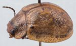
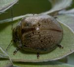
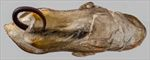
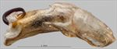
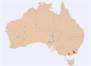

Click on images to enlarge
{kind=link}

Male, Mt. Donna Buang, Victoria
{kind=link}

Male, Mt. Donna Buang, Victoria
{kind=link}

Aedeagus, dorsal view (Mt. Donna Buang, Victoria)
{kind=link}

Aedeagus, lateral view (Mt. Donna Buang, Victoria)
{kind=link}

Distribution
Name
Trachymela sp. Ta158
Reference specimen
2017-551, Mt. Donna Buang, Victoria.
Adult Description
Length: ♀ 6.6-7.3 mm [6], ♂ 6.2-6.6 mm [2].
Colour: head: almost uniformly yellowish-brown to a little behind level of rear of eyes, black further back, mandibles black-tipped; antennomeres 1-2 light to mid-brown, then rapidly transiting to black with 4-11 black; pronotum: yellowish-brown, of similar shade to or fractionally paler than head, largely uniform but may be locally suffused with darker brown; scutellum: brown, concolorous with pronotum, usually broadly bordered with slightly to markedly darker brown; elytra: yellowish-brown, concolorous with pronotum; humeral callus black; punctures mostly concolorous with or slightly darker than interstices; some punctures, often around elytral summit, behind post-basal depression and along discal margin, black, locally suffused and coalescing with adjacent punctures into small, fractured black maculae; venter: mid-brown, almost uniformly so, inside surface of elytral epipleura brown. Cuticular wax: unknown.
Head; punctures variable, moderately sized (pd~1.5-2xef) and somewhat unevenly to quite evenly but quite densely packed, interstices often in form of longitudinal ridges. Antennae long (AL ♂=47-50%BL, ♀=44-47%BL), filiform. Pronotum; almost evenly curved transversely over discal area, a broad shallow depression situated behind the outside edge of each eye, margins prominently explanate; disc varies from almost smooth to a little rugulose; discal puncturation clearly impressed, even to slighly uneven in distribution and moderately dense in discal area; punctures becoming much coarser at lateral margins; front margins join lateral margins in a smoothly rounded right-angle, with lateral margin curving smoothly and gradually towards rear margin. Scutellum; smooth or shagreened, unpunctured. Elytra; surface evenly curved, punctures distinct, moderta to large in size and slightly unevenly distributed, with much smaller punctures scattered sparingly on the interstices, verrucae absent, suture carinate in posterior 25%, surface continuous under humeral callus, vertical extension of epipleura considerable (HCE/PW=0.34-0.40); lateral margin usually slightly oblique between humeral callus and a point a little anterior to summit, straight and perpendicular to anterior edge elsewhere. Venter; Prosternal process almost parallel-sided or narrowing anteriorly, closed anteriorly, a sparse scatter of short setae at rear of prosternal process, absent from mesosternum, a single seta on anterior and median trochanter; front edge of metasternum beveled, truncate; inner edge of posterior of epipleurae lacking setae. Aedeagus; small (LPE=32.1%BL), in dorsal view, narrowing slightly from basal sulcus to about middle then broadening slightly towards apex before the sides converge towards apex initially in a smooth arc and then in a straight line to form a triangle with apex at about 80̊, dorsal surface smoothly curved, ostium broad, with dorsal ostial processes relatively short; in lateral view, angled through about 125̊ just posterior to middle, then almost straight to apex, dorsal and ventral surfaces parallel from middle to close to apex where they converge to tip in a smooth curve, tip small and very slightly reflexed, protruding part of flagellum thick and strongly curved.Larvae
unknown.
Eggs
unknown.
Similar species
Ta157 – this is another species that feeds on Leptospermae and is also found in the highland areas of south-eastern Australia. It tends to be slightly smaller and the black colouration of on the elytra tends to be more extensive on the interstices rather than being confined to the punctures and immediate area around them. The aedeagus of Ta157 is smoothly rounded at the apex rather than pointed as in Ta158 and its flagellum is straight on exit from the ostium.
Notes
This is one of the very few species of Trachymela that does not feed on eucalypt hosts. It has been recorded from Leptospermeae.
Copyright © 2026. All rights reserved.